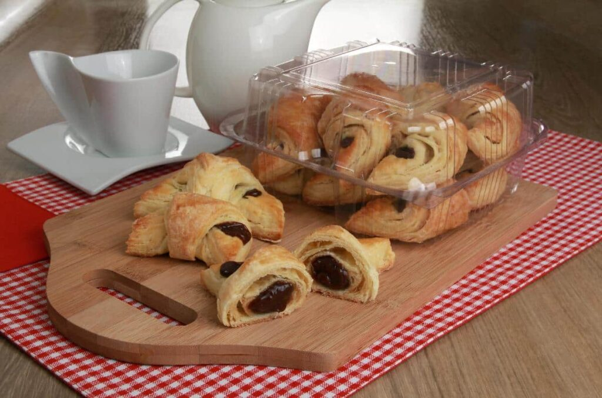

Suflê de legumes e queijo
Ingredientes:
- 2 batatas em cubos
- 1 cenoura em cubos
- 1 xícara (chá) de vagem picada
- Sal a gosto
- 2 xícaras (chá) de queijo mussarela em cubos
- 4 colheres (sopa) de óleo
- 4 colheres (sopa) de farinha de trigo
- 1 xícara (chá) de leite
- 1 colher (café) de fermento em pó
- 5 ovos (claras e gemas separadas)
- Óleo para untar
- 1 xícara (chá) de queijo parmesão ralado para polvilhar
Modo de preparo:
- Cozinhe a batata, a cenoura e a vagem em água e sal até que fiquem macias.
- Escorra, coloque em uma tigela e deixe amornar.
- Adicione a mussarela, misture e reserve.
- Em outra tigela, misture o óleo, a farinha, o leite, o fermento e as gemas.
- Acrescente aos legumes reservados, tempere com sal e misture.
- Em outra tigela, bata as claras em neve, despeje na mistura anterior e misture delicadamente.
- Divida a massa em refratários individuais untados, polvilhe com o parmesão e coloque um ao lado do outro em uma fôrma grande.
- Leve ao forno médio, preaquecido, por 20 minutos ou até dourar.
- Sirva em seguida
Pizza de Calabresa
Ingredientes:
- 1 tablete de fermento biológico fresco (15g)
- 1 xícara (chá) de água morna
- 2 colheres (sopa) de óleo ou azeite
- 1 colher (chá) de sal
- 1/2 xícara (chá) de farinha integral
- 2 e 1/2 xícaras (chá) de farinha de trigo (aproximadamente)
- Farinha de trigo para polvilhar
- 100g de requeijão tipo Catupiry® para rechear a borda
- Óleo para untar
Cobertura:
- 1/2 xícara (chá) de molho de tomate caseiro
- 200g de queijo mussarela ralado
- 2 gomos de linguiça calabresa fatiada
- 1 cebola fatiada
- 12 azeitonas verdes miúdas para decorar
- Orégano seco a gosto para polvilhar
Modo de preparo:
- Dissolva o fermento na água morna, adicione o óleo, o sal e misture.
- Acrescente as farinhas, aos poucos, mexendo com uma colher até soltar da lateral da vasilha.
- Sove por 5 minutos ou até obter uma massa lisa e macia.
- Forme uma bola, cubra e deixe descansar por 1 hora ou até dobrar de volume.
- Abra a massa com a ajuda de um rolo sobre uma superfície enfarinhada, formando um disco de 32cm de diâmetro.
- Com ajuda de um saco de confeiteiro faça um fio de requeijão em todo o diâmetro da borda, dobre a massa fazendo a borda recheada.
- Transfira para uma assadeira untada e fure ligeiramente com um garfo.
- Espalhe o molho e leve ao forno alto, preaquecido, por 10 minutos.
- Cubra com a mussarela, a calabresa e a cebola.
- Asse por mais 10 minutos ou até dourar levemente.
- Decore com azeitonas, polvilhe com orégano e sirva.
Croissant recheado com brigadeiro

Ingredientes:
- 15g de fermento biológico fresco
- 1 e 1/4 de xícara (chá) de leite
- 1/4 de xícara (chá) de açúcar
- 1 colher (chá) de sal
- 4 colheres (sopa) de manteiga
- 4 xícaras (chá) de farinha de trigo (aproximadamente)
- Farinha de trigo para enfarinhar
- 3 e 1/2 xícaras (chá) de margarina para folhar sem sal
- 2 gemas para pincelar
Recheio:
- 2 latas de leite condensado
- 6 colheres (sopa) de chocolate em pó
- 3 colheres (sopa) de manteiga
Modo de preparo:
- Para o recheio, leve o leite condensado, o chocolate em pó e a manteiga ao fogo médio, mexendo bem até engrossar levemente.
- Desligue e deixe esfriar.Em uma vasilha, dissolva o fermento no leite.
- Adicione o açúcar, o sal e a manteiga.
- Acrescente a farinha, aos poucos, mexendo até soltar da lateral da vasilha.
- Transfira para uma superfície lisa e levemente enfarinhada e sove por 5 minutos ou até obter uma massa lisa e levemente pegajosa.
- Embrulhe em um plástico e leve à geladeira por 1 hora.
- Deixe a margarina para folhar em temperatura ambiente, porém não muito mole.
- Coloque sobre um saco plástico e espalhe com uma espátula, formando dois quadrado de 15cm, embrulhe e leve à geladeira por 1 hora.
- Abra a massa sobre uma superfície enfarinhada até obter um retângulo de 10cm X 20cm.
- Coloque metade da margarina no centro da massa e dobre 2 vezes como um envelope, passe um rolo sobre a massa até formar um retângulo grande novamente.
- Volte a massa para à geladeira por mais 1 hora, coberta com plástico.
- Retire e repita o procedimento usando o restante da margarina.
- Volte à geladeira por mais 1 hora, coberta com plástico.
- Abra a massa gelada sobre uma superfície lisa e enfarinhada até obter 0,5cm de espessura, dobre ao meio e abra novamente até obter novamente 0,5cm de espessura.
- Corte em pequenos triângulos com 5cm de base.
- Divida o recheio entre os triângulos, enrole começando pela base e curve levemente as pontas para dar formato do croissant.
- Coloque em uma fôrma grande, um ao lado do outro e pincele com a gema.
- Leve ao forno médio, preaquecido, por 20 minutos ou até dourar.
- Retire e deixe amornar para embalar.
Ensopado de cordeiro:
- Use carne.
- Prepare a água.
- Adicione sal, bolos de cevada secos, cebola, chalota e leite.
- Esmague e acrescente alho e alho-poró
Curiosidade:
O Ensopado de Cordeiro é uma receita da Mesopotâmia, por isso as instruções são limitadas e arcaicas.
Aproveitando o assunto...
Lista de Povos que provavelmente não habitaram a Mesopotâmia por volta de 1200a.C.
- Japoneses
- Brasileiros
- Anunakis
- Astecas
- Incas
- Chilenos